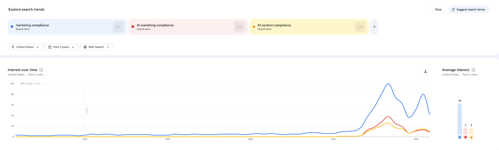
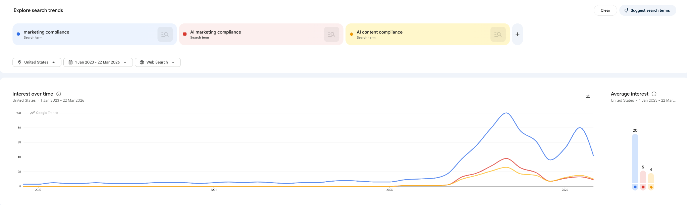
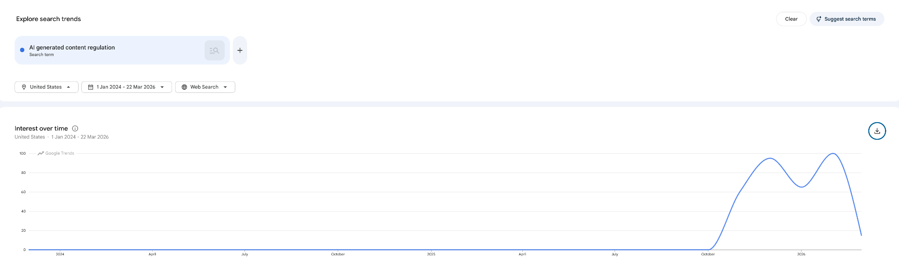
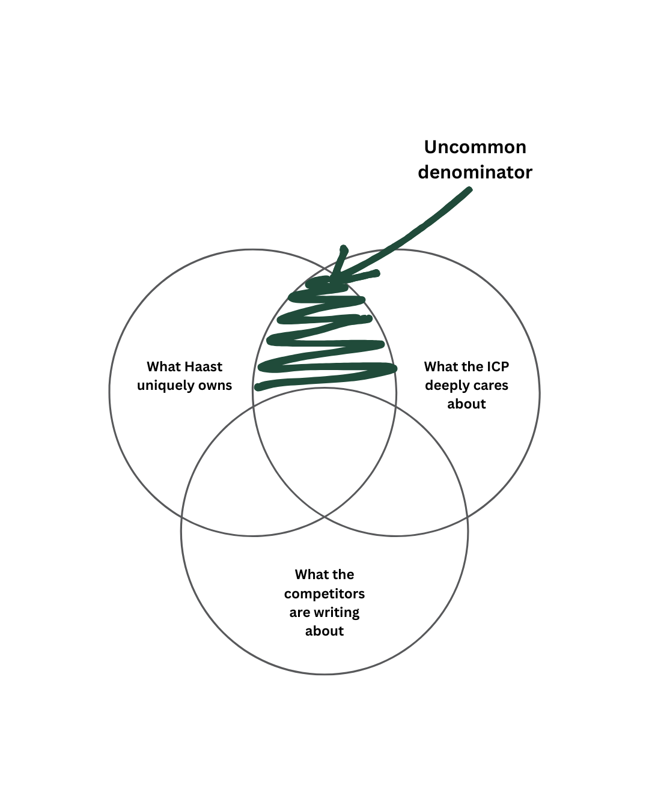

The 2026 State of AI Content Compliance in Regulated US Enterprises
A content strategy plan for a thought leadership benchmark report
This plan assumes no budget or time constraints. I made that deliberate choice because the brief asked me to think about the content that would create the most strategic impact for Haast, and to me, a proprietary benchmark report would be the best way to do that.
A benchmark report is the one content format that can't be commoditised. It generates citations, feeds every downstream channel, and positions Haast as the category definer and not a category participant. I've done this before at Easy Agile with the State of Team Alignment 2026 report (419 respondents, original research), so I'm not proposing this in theory.
The question I started with: what sits at the intersection of what Haast uniquely owns, what the ICP deeply needs and cares about, and what no one else has written yet? That Uncommon Denominator Framework drove every decision in this plan.
My research process had three steps, each corresponding to one circle of the uncommon denominator framework. I used a combination of AI research tools, search data platforms, and direct audience anecdotes.
Before researching the audience or the content landscape, I needed a thorough understanding of what Haast is, how they think, and where they're going. I used Perplexity AI and Claude to conduct a deep-dive company intelligence sweep - pulling from Haast's website, blog, case studies, investor notes, press coverage, LinkedIn, and founding team profiles.
Key findings from this research:
The strategic insight this research surfaced: Haast's ex-lawyer founding team is its most defensible differentiator. No other AI compliance vendor can authentically say "we've sat in the legal team's chair." That credibility needs to be the foundation of their thought leadership content.
This step combined three research sources to build a complete picture of both target personas - legal and compliance teams (the buyers) and marketing and content teams (the users), across financial services, insurance, healthcare, and telecoms.
I researched how these personas describe their pain in their own words, drawing from practitioner podcasts (PerformLine's COMPLY podcast, Convince & Convert), software review platforms (Red Marker on Capterra and Software Advice), the Red Marker/IntelligenceBank "Resolving the Divide" study, LinkedIn practitioner posts, professional community discussions, and industry surveys.
These personas talk in private channels, anonymous forums, and closed industry communities. I found compliance officers talking in anonymous confessional sites like eFinancialCareers:
And a few marketing Reddit conversations about compliance:
Key language patterns from each persona:
I exported raw Google Trends data across three time windows to validate whether the audience's search behaviour confirmed the pain patterns from the VoC research. The findings were striking.



| Search term | Trend finding |
|---|---|
| "marketing compliance" - 5-year index | Flat at index 2-6 from 2021 through early 2025. Then: May 2025 to 17. July 2025 to 56. September 2025 to 100 (peak). February 2026 to 80. A 20x increase in under 12 months. |
| "AI marketing compliance" - emergence | Registered zero from 2021 through January 2025. Emerged February 2025. Peaked at index 38 in September 2025. A brand new search behaviour. |
| "AI content compliance" - emergence | Identical pattern - zero through January 2025, emerged February 2025, peaked at 26. Both AI-specific terms track the "marketing compliance" explosion. |
| "AI generated content regulation" - 2024 to now | Zero through October 2025. November 2025 to 60. December 2025 to 95. February 2026 to 100. This category came into existence as a search behaviour four months ago. |
The marketing compliance category was dormant for four years, and then detonated in 2025. This is AI adoption forcing regulated enterprises to confront a problem they'd been managing on inertia. The search behaviour confirms the VoC finding: this is a felt, urgent, and growing pain.
I ran keyword discovery across a broader set of terms in Google Keyword Planner (US, past 12 months) to identify where search demand is actively growing right now. The focus was on terms with measurable volume and strong upward momentum.
Four keywords are actively booming with low competition - the combination Haast needs to capture real, growing demand today:
The pattern - high recent growth, low competition, directly relevant to Haast's positioning and the report's thesis. We must capture the active, growing demand right now, before competition consolidates around it.
I would additionally run a Competitive Analysis in Ahrefs with paid access for a full content gap analysis - specifically identifying keywords competitors like Sedric, PerformLine, and Norm AI rank for that Haast doesn't. This would sharpen the SEO opportunity sizing and identify quick-win keywords where Haast could gain early traction. I'd prioritise this in the first week of the role.
With a clear picture of Haast's positioning and the audience's pain, the final question was: has anyone already addressed this? I used Perplexity and Claude to systematically audit 48 sources of existing online content in the marketing compliance space, tagging each by dominant narrative theme.
But the most striking absence across all 48 sources: there is no authoritative standalone content about AI-generated marketing content compliance. The topic appears as a footnote in trend roundups, a paragraph in AI overview pieces, an aside in regulatory updates - but nobody has built the definitive piece.
The Google Trends data confirms this isn't a fringe concern, but a category forming at speed. The VoC research confirms the audience is acutely feeling the pain. And the content audit confirms nobody has claimed the space.
The uncommon denominator I have picked for this piece: the audience has a specific, urgent, unmet need around AI-generated content compliance. Haast can become the only credible voice to address it. And no existing content owns this angle. That is the intersection this report is built on.
The three research steps map directly to the three circles of the Venn diagram. The intersection is where the content strategy lives.

| Circle | The question | The answer |
|---|---|---|
| Circle 1 | What does Haast uniquely own? | Ex-lawyer founders with lived compliance pain. The only platform with end-to-end pre + post monitoring. Custom risk calibration. Credibility to define what "defensible" looks like in front of a regulator - no other AI compliance vendor can say this. |
| Circle 2 | What does the ICP urgently need? | A framework for managing AI-generated marketing content through compliance, before regulators force the issue. Both personas feel this acutely. The search data shows a 20x increase in related queries. The VoC research shows it's a live, unresolved operational pain. |
| Circle 3 | What has no one written yet? | An authoritative, data-driven answer to: how are regulated US enterprises actually managing AI-generated marketing content right now? The content audit found zero standalone pieces. Keyword Planner shows the terms don't yet have a dataset. The window is open. |
The uncommon denominator: a proprietary benchmark report that answers the question no one has asked at scale - how are regulated US enterprises managing AI-generated marketing content, and what happens when they're not?
| Element | Detail |
|---|---|
| Format | Proprietary benchmark report - gated PDF, ~20 pages, original survey data |
| Primary persona | Chief Compliance Officer / Head of Compliance at regulated US enterprises with 500+ employees |
| Secondary persona | CMO / VP Marketing / Head of Content at the same companies |
| Industries | Financial services (primary), insurance, healthcare - Haast's existing base and US expansion targets |
| How it connects to Haast | The report doesn't mention Haast by name until the final section. It owns the conversation first. Every finding maps to a pain point Haast's platform addresses - volume overwhelm, shadow content, inconsistent review, and lack of audit trail. Haast is positioned as the category expert and thought leader in this space. |
Regulated enterprises have embraced AI tools to accelerate marketing content production - but compliance infrastructure hasn't kept pace. Most organisations have no formal policy for reviewing AI-generated content, no framework for evaluating AI-specific risks, and no visibility into how much AI-generated content is bypassing review entirely. The AI adoption wave that was supposed to make marketing faster has created a new compliance blind spot, and nobody is measuring it. Yet.
300 senior respondents across two cohorts: compliance officers (CCO, Head of Compliance, Chief Legal Officer, Compliance Manager) and marketing leaders (CMO, VP Marketing, Head of Content, Marketing Director). All at US enterprises with 500+ employees. Industries: financial services, insurance, and healthcare, with a secondary sample from telecoms and FMCG. Survey administered via Pollfish or Lucid for verified professional targeting.
Sample questions designed to generate headline findings:
The report moves through six sections. Each one advances a single argument - regulated enterprises are producing more AI-generated marketing content than their compliance functions can handle, most have no policy for managing this, and the regulatory environment is hardening fast.
Opens with two numbers placed side by side: marketing teams at regulated enterprises have tripled their content output since AI tools became mainstream, while the median compliance team still has five or fewer reviewers (PerformLine 2025 Benchmark). No editorialising. The gap speaks for itself.
Key stats: 42% of compliance professionals flagged unknown or unmanaged employee AI use as a concern (Compliance Week and konaAI, 2025). "AI generated content regulation" went from zero search volume to index 100 in four months (Google Trends, Feb 2026).
The introduction closes by naming what the report is actually measuring - not whether organisations are using AI to produce marketing content, but whether they have any process for reviewing it before it goes live.
Survey data on how AI tools have changed content output at regulated enterprises in the past 12 months. The specific question: by what percentage has your marketing team's content volume increased since adopting AI writing tools?
Supporting context: 56% of marketing leaders already described their review process as time-consuming before AI-generated volume entered the equation (PerformLine 2025). The section makes the arithmetic plain - more content going in, same number of reviewers, no change in process.
The report's central quantitative finding. Survey respondents answer a single yes/no question: does your organisation have a formal written policy for reviewing AI-generated marketing content before publication?
Supporting data: 40% of compliance teams still use spreadsheets and word processors as their primary review infrastructure (NorthRow 2023). The section talks about why the policy gap exists and shows the numbers.
A concrete breakdown of the compliance risks specific to AI-generated content, grounded in regulatory language rather than general AI anxiety. Three specific failure modes:
Each failure mode is illustrated with a real-world scenario rather than hypothetical language.
The section most compliance officers will recognise immediately. Covers the content that bypasses review entirely, because the process is too slow and people have deadlines.
Supporting data: only 17% of compliance professionals require pre-approval of employees' social media activity (COMPLY.com). 58% of organisations lack compliance monitoring on at least one channel they actively use (PerformLine).
The specific AI angle: when field teams and regional marketers use ChatGPT to draft materials, the content enters the world without leaving any record that a compliance team could review, even after the fact.
Survey data on the practices that differentiate organisations with lower compliance incident rates. Reported as findings, rather than prescriptions. Example specific practices:
Each practice is tied to a concrete outcome from the survey data.
A factual summary of where regulators currently stand on AI-generated marketing content:
The report closes with one observation: enforcement actions in this area are at early stages. Organisations that build their AI content compliance framework now will spend less time catching up when they peak.
Every distribution activity draws from the same proprietary data from the report, compounding the asset's value across channels over 8 months.
Opening ~400 words of the report introduction.
Marketing teams at regulated US enterprises have roughly tripled their content output since AI writing tools became standard. The average compliance team, on the other hand, still has five or fewer reviewers.
Something had to give, and in 2025 it did.
Compliance queues started growing faster than anyone could explain. Field teams and regional staff were posting AI-drafted materials without a compliance touchpoint, because the process was too slow, and no policy told them they couldn't.
By the time compliance caught up, the content was already live. In a 2025 survey by Compliance Week, 42% of compliance professionals flagged unknown or unmanaged employee AI use as a top concern. Anyone managing a review queue that year would recognize the magnitude of this issue immediately.
Regulators noticed too. Interest in "AI-generated content regulation" as a search term barely registered before late 2025. By February 2026, it had peaked. The question moved from specialist discussion to general search behavior in under six months. While enforcement actions are still early-stage, the direction is pretty clear.
This report is the first attempt to measure the scale of that gap across regulated US enterprises.
We surveyed 300 senior compliance officers and marketing leaders at organizations with 500 or more employees across financial services, insurance, and healthcare.
We asked how much of their marketing content is now AI-generated or AI-assisted, whether they have a formal written policy for reviewing it before it goes live, and who is accountable when it turns out to be non-compliant.
What follows is what they told us - the data on where regulated enterprises stand today when it comes to AI-generated content.